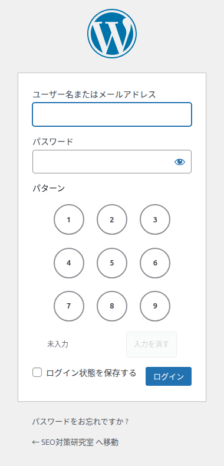
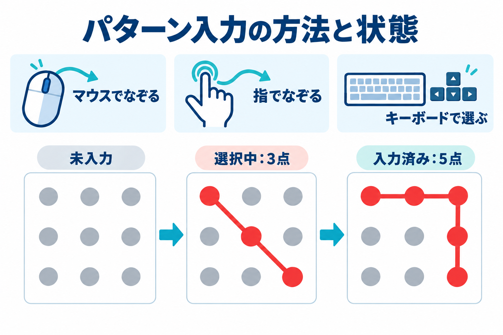
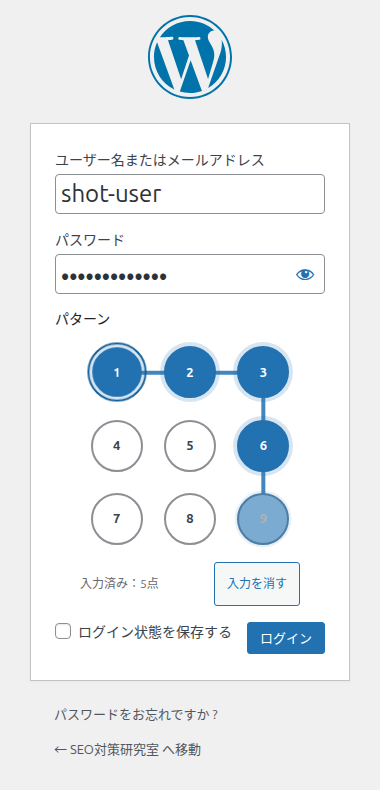
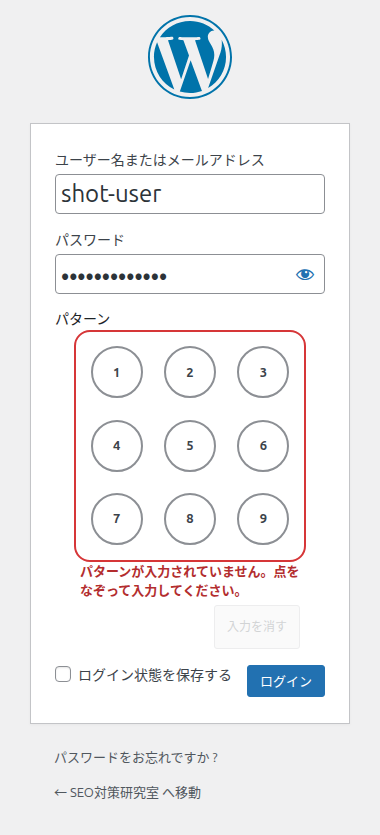
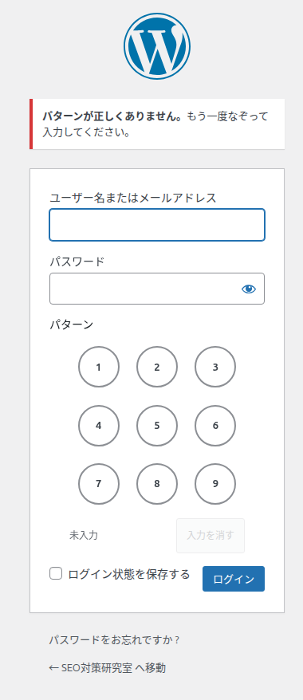
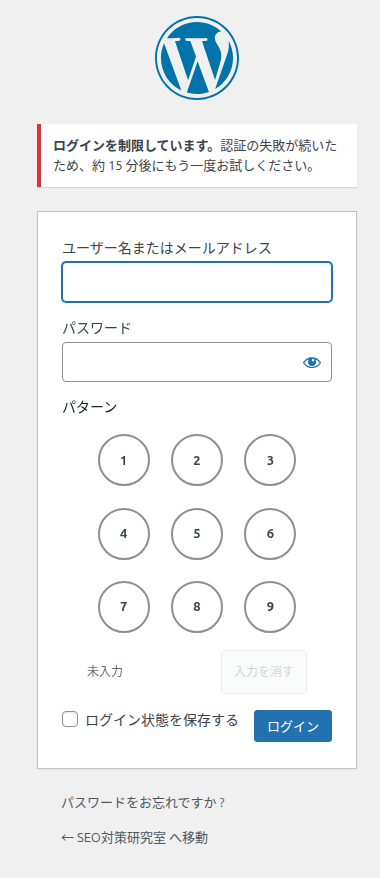

ログイン画面のパターン入力
パターンが設定されているサイトでは、WordPress 標準のログイン画面にパターン欄が表示されます。ユーザー名・パスワード・パターンの3つを入力してログインします。


画面の地図
パターン欄は、次の4つの部分からできています。
| 番号 | 部分 | 説明 |
|---|---|---|
| 1 | 見出し「パターン」 | パターン欄の名前です。サイトの設定でパターンが有効なときだけ表示されます。 |
| 2 | 9点の盤面 | 1〜9の点が3×3に並びます。左上が1、右下が9です。 |
| 3 | 状態の表示 | 「未入力」「選択中：N点」「入力済み：N点」のいずれかが表示されます。 |
| 4 | 「入力を消す」ボタン | 選んだ点をすべて消して、最初から入力し直せます。何も選んでいないときは押せません。 |
入力のしかた
マウス・指でなぞる
-
1
はじめの点の上で押します。
-
2
押したまま、次の点へ指（マウス）を動かします。選んだ点どうしが線で結ばれます。
-
3
最後の点で指を離します。選択はそのまま残ります。

キーボードで選ぶ
盤面の点にフォーカスがあるとき、次のキーで操作できます。
| キー | 動き |
|---|---|
| 矢印キー | フォーカスを上下左右の点へ移します。 |
| Space / Enter | フォーカスしている点を選びます。 |
| Backspace | 最後に選んだ点を1つ取り消します。 |
| Esc / Delete | 選んだ点をすべて消します。 |
ヒント
Tab キーでパターン欄に移動できます。点を選ぶと、選んだ点数が状態の表示に出ます。
パターンの決まり
- 4点以上を使います。3点以下では送信できません。
- 同じ点は、1つのパターンの中で1回だけ使えます。2回目に触れても選ばれません。
- まだ選んでいない点を飛び越えて線を引くと、途中の点も選ばれたものとして扱われます。たとえば 1 から 3 へなぞると、2 も選ばれて「1 → 2 → 3」になります。
- 点をなぞる順番が違えば、別のパターンです。
おすすめ
使う点が多いほど、第三者が言い当てにくくなります。6点以上をおすすめします。
状態の表示
| 表示 | 意味 | 次にすること |
|---|---|---|
| 未入力 | まだ点を選んでいません。 | 盤面をなぞって入力します。 |
| 選択中：N点（4点以上必要） | 4点未満です。まだ送信できません。 | あと少し点を増やします。 |
| 入力済み：N点 | 4点以上そろいました。ログインを押せます。 | 「ログイン」を押します。 |
エラーの意味と対処
パターン欄の下に赤字で出るメッセージと、ログインを押したあとに画面上部へ出るメッセージがあります。


| メッセージ | 意味 | 対処 |
|---|---|---|
| パターンが入力されていません。点をなぞって入力してください。 | パターンを選ばずにログインを押しました。 | 盤面をなぞってから、もう一度ログインを押します。 |
| パターンが短すぎます。4点以上をなぞってください。 | 3点以下しか選んでいません。 | 4点以上になるまで点を増やします。 |
| パターンが入力されていません。9点のうち4点以上をなぞって入力してください。 | パターンが送信されていません。 | 盤面をなぞってから、ログインを押します。 |
| パターンが短すぎます。9点のうち4点以上をなぞって入力してください。 | 4点未満のパターンが送信されました。 | 4点以上で入力し直します。 |
| パターンを読み取れませんでした。点をなぞり直して入力してください。 | パターンの形が正しく送信されませんでした。 | 「入力を消す」を押して、もう一度なぞります。 |
| パターンが正しくありません。もう一度なぞって入力してください。 | 設定されているパターンと違います。 | 正しいパターンを入力し直します。 |
| ログインを制限しています。認証の失敗が続いたため、約 N 分後にもう一度お試しください。 | 失敗が続き、一時的にログインできません。 | 表示された時間が過ぎるまで待ちます。 |
パターンを間違えると点数は消えます
ログインに失敗すると、画面が切り替わってパターンの選択は消えます。ユーザー名・パスワード・パターンを、もう一度入力してください。
ログインが制限されたとき

制限中は、正しいパターンを入力してもログインできません。表示された時間が過ぎると、自動的に解除されます。回数と時間は管理者が管理画面で変更できます。
パターンを忘れたとき
パターンが分からないときは、サイト管理者に問い合わせてください。管理者でも管理画面に入れない場合は、トラブルシューティングの「パターンを忘れた・管理画面に入れない」をご覧ください。